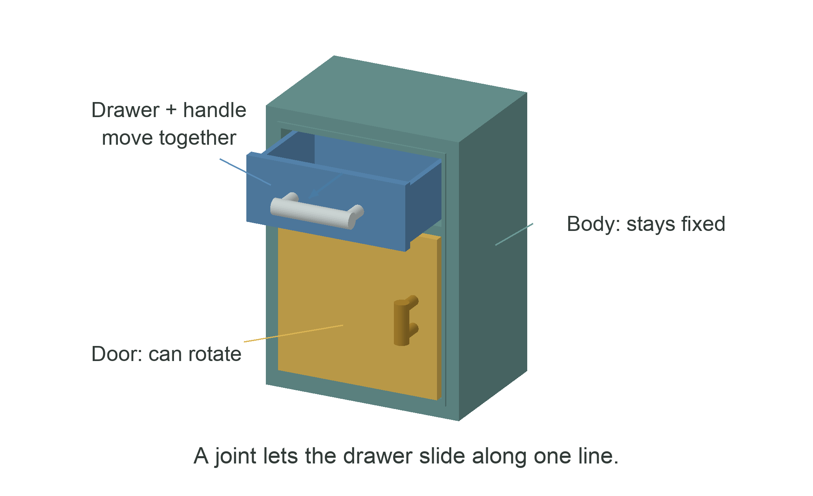

3.2 From 3D shape to a movable object
A reconstructed cabinet can look convincing from several views. To open its drawer, we also need to describe which part moves, how it is connected, and how it responds to a pull.
3.2.1 What reconstruction gives us
A 3D reconstruction describes an object’s shape or appearance from photographs. A generated asset proposes a model from an input such as an image. Either result can show a cabinet without identifying its moving parts.
These outputs describe shape or appearance. They do not automatically tell us that the blue drawer should slide independently of the cabinet body, or how far a pull will move it.
In this example, we use meshes for the visible parts. A 3D editor such as Blender or Maya can help separate or rebuild those parts and check their size. A closed-cabinet reconstruction may omit the drawer’s hidden tray or the space inside the body; those details need to be checked and, where necessary, added.
Section 3.6 introduces research methods that help build this structure: Articulate AnyMesh[1] starts with an existing mesh, while URDFormer[2] assembles parts from an image and detected part locations.
3.2.2 What makes the drawer movable?


A sliding joint connects the drawer to the body and restricts it to moving along the rails. Its limit specifies how far it is allowed to open. This is an articulated object: parts connected by joints that describe their relative movement.
The joint still does not say what happens under a particular pull. That also depends on properties such as mass and friction, and on contact with other objects. Those are inputs to a physics simulation.
3.2.3 From shape to motion
- ShapeDescribe the cabinet’s surfaces, including the drawer tray and handle.
- ArticulationSeparate its parts and describe their joints, directions, and limits.
- SimulationPrepare contact and physical properties, apply a force, and calculate the movement.
For the drawer, the distinction is concrete: shape describes the drawer and handle; articulation lets the drawer slide; simulation calculates how it moves when pulled.
References
- Xiaowen Qiu, Jincheng Yang, Yian Wang et al. Articulate AnyMesh: Open-Vocabulary 3D Articulated Objects Modeling. arXiv preprint arXiv:2502.02590, 2025. arXiv
- Zoey Chen, Aaron Walsman, Marius Memmel et al. URDFormer: A Pipeline for Constructing Articulated Simulation Environments from Real-World Images. arXiv preprint arXiv:2405.11656, 2024. arXiv